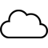

PRISM
⚡
Break
All Projects
Platforms
Protocols
About
Bitcoin کمک مالی
Platforms
/
Servers
/
Social Networks
Free Recommendations
buddycloud
شبکه اجتماعی غیرمتمرکز و متن باز
diaspora*
شبکه اجتماعی توزیع شده و تحت نظارت گروهی
Web Service
friendica
سرور شبکه اجتماعی آزاد و متنباز
GNU social
شبکه اجتماعی غیرمتمرکز روی سرور شخصی
Web Service
Hubzilla
Hubzilla is a powerful platform for creating interconnected websites (hubs) featuring a decentralized identity, communications, and permissi…
Web Service

Movim
سرور شبکه اجتماعی غیرمتمرکز و شخصی
Web Service
pump.io
سرور شبکه اجتماعی روی سرور شخصی
Salut à Toi
ابزار ارتباطی چندمنظوره با قالبهای مختلف
Syndie
برنامه انجمن ناشناس و توزیع شده
مالکیت طلبانه*
Facebook
Google+
LinkedIn
Twitter
Servers
Anonymizing networks
Bookmark Sync
Communication Protocols
Disk Encryption
DNS
Enterprise Suite
File Storage & Sync
Mail Servers
Mail Transfer Agents
انتشار فیلم و عکس
Mesh Networks
Operating Systems
Productivity
Raspberry Pi
SIP Servers
Social Networks
Video & Voice
VPN Servers
تحیل آمار بازدید سایت
XMPP Servers


 Facebook
Facebook
 Google+
Google+
 LinkedIn
Facebook
Google+
LinkedIn
LinkedIn
Facebook
Google+
LinkedIn